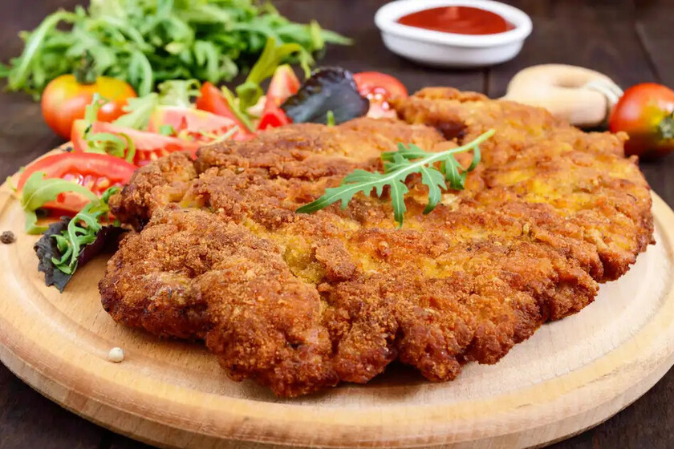

Receta
Ingredientes
A mi familia le gusta mucho cuando lo preparo, y esto me motiva para continuar con mi hobbie y disfrutarlo.
También desde pequeña es mi comida favorita, está en el top de mis comidas preferidas.
- Spaguetti
- queso crema
- Espinacas
- Cilantro
- Chile morron
- leche
- mantequilla
- sal
- Agua
- Cebolla
- Ajo
- Chile serrano
Desde luego, agregando todos estos ingredientes según las porciones y la cantidad de los comensales